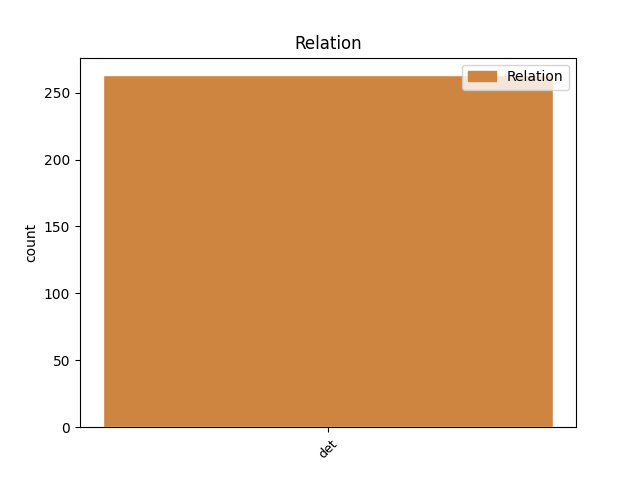
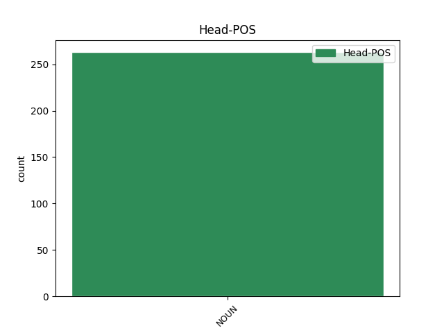
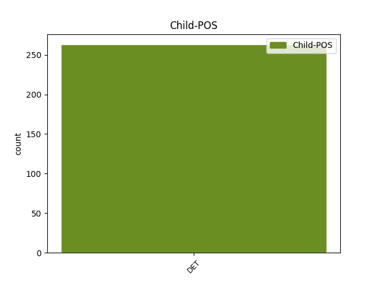

Distribution of features within this leaf



Agreement Rules sorted by frequency.
- When the dependent token is the determiner(det) of the head token, and the head token is NOUN and the dependent token is DET.
1 Tento tento DET PDYS1---------- Case=Nom|Gender=Masc|Number=Sing|PronType=Dem 2 det _ _
2 zákon zákon NOUN NNIS1-----A---- Animacy=Inan|Case=Nom|Gender=Masc|Number=Sing|Polarity=Pos 0 _ _ _
3 nabývá _ _ _ _ 0 _ _ _
4 účinnosti _ _ _ _ 0 _ _ _
5 dnem _ _ _ _ 0 _ _ _
6 1 _ _ _ _ 0 _ _ _
7 . _ _ _ _ 0 _ _ _
8 ledna _ _ _ _ 0 _ _ _
9 1992 _ _ _ _ 0 _ _ _
10 . _ _ _ _ 0 _ _ _
Disagree Examples:
1 Toto _ _ _ _ 0 _ _ _
2 pravidlo _ _ _ _ 0 _ _ _
3 se _ _ _ _ 0 _ _ _
4 použije _ _ _ _ 0 _ _ _
5 i _ _ _ _ 0 _ _ _
6 v _ _ _ _ 0 _ _ _
7 případě _ _ _ _ 0 _ _ _
8 rozdělení _ _ _ _ 0 _ _ _
9 a _ _ _ _ 0 _ _ _
10 dále _ _ _ _ 0 _ _ _
11 může _ _ _ _ 0 _ _ _
12 být _ _ _ _ 0 _ _ _
13 použito _ _ _ _ 0 _ _ _
14 v _ _ _ _ 0 _ _ _
15 případě _ _ _ _ 0 _ _ _
16 fúze _ _ _ _ 0 _ _ _
17 splynutím _ _ _ _ 0 _ _ _
18 , _ _ _ _ 0 _ _ _
19 jakož _ _ _ _ 0 _ _ _
20 i _ _ _ _ 0 _ _ _
21 v _ _ _ _ 0 _ _ _
22 dalších _ _ _ _ 0 _ _ _
23 případech _ _ _ _ 0 _ _ _
24 , _ _ _ _ 0 _ _ _
25 kdy _ _ _ _ 0 _ _ _
26 náklady _ _ _ _ 0 _ _ _
27 na _ _ _ _ 0 _ _ _
28 získání _ _ _ _ 0 _ _ _
29 informace _ _ _ _ 0 _ _ _
30 za _ _ _ _ 0 _ _ _
31 minulé _ _ _ _ 0 _ _ _
32 účetní _ _ _ _ 0 _ _ _
33 období _ _ _ _ 0 _ _ _
34 jsou _ _ _ _ 0 _ _ _
35 neúměrné _ _ _ _ 0 _ _ _
36 jejímu jeho DET PSZS3FS3------- Case=Dat|Gender=Masc,Neut|Gender[psor]=Fem|Number=Sing|Number[psor]=Sing|Person=3|Poss=Yes|PronType=Prs 37 det _ _
37 významu význam NOUN NNIS3-----A---- Animacy=Inan|Case=Dat|Gender=Masc|Number=Sing|Polarity=Pos 0 _ _ _
38 . _ _ _ _ 0 _ _ _
1 (3) _ _ _ _ 0 _ _ _
2 Podle _ _ _ _ 0 _ _ _
3 odstavce _ _ _ _ 0 _ _ _
4 1 _ _ _ _ 0 _ _ _
5 jsou _ _ _ _ 0 _ _ _
6 a) _ _ _ _ 0 _ _ _
7 zřizovacími _ _ _ _ 0 _ _ _
8 výdaji _ _ _ _ 0 _ _ _
9 souhrn _ _ _ _ 0 _ _ _
10 výdajů _ _ _ _ 0 _ _ _
11 vynaložených _ _ _ _ 0 _ _ _
12 na _ _ _ _ 0 _ _ _
13 založení _ _ _ _ 0 _ _ _
14 účetní _ _ _ _ 0 _ _ _
15 jednotky _ _ _ _ 0 _ _ _
16 do _ _ _ _ 0 _ _ _
17 okamžiku _ _ _ _ 0 _ _ _
18 jejího jeho DET PSZS2FS3------- Case=Gen|Gender=Masc,Neut|Gender[psor]=Fem|Number=Sing|Number[psor]=Sing|Person=3|Poss=Yes|PronType=Prs 19 det _ _
19 vzniku vznik NOUN NNIS2-----A---- Animacy=Inan|Case=Gen|Gender=Masc|Number=Sing|Polarity=Pos 0 _ _ _
20 , _ _ _ _ 0 _ _ _
21 zejména _ _ _ _ 0 _ _ _
22 soudní _ _ _ _ 0 _ _ _
23 a _ _ _ _ 0 _ _ _
24 správní _ _ _ _ 0 _ _ _
25 poplatky _ _ _ _ 0 _ _ _
26 , _ _ _ _ 0 _ _ _
27 výdaje _ _ _ _ 0 _ _ _
28 na _ _ _ _ 0 _ _ _
29 pracovní _ _ _ _ 0 _ _ _
30 cesty _ _ _ _ 0 _ _ _
31 , _ _ _ _ 0 _ _ _
32 odměny _ _ _ _ 0 _ _ _
33 za _ _ _ _ 0 _ _ _
34 zprostředkování _ _ _ _ 0 _ _ _
35 a _ _ _ _ 0 _ _ _
36 poradenské _ _ _ _ 0 _ _ _
37 služby _ _ _ _ 0 _ _ _
38 a _ _ _ _ 0 _ _ _
39 nájemné _ _ _ _ 0 _ _ _
40 . _ _ _ _ 0 _ _ _
1 (9) _ _ _ _ 0 _ _ _
2 Dlouhodobým _ _ _ _ 0 _ _ _
3 nehmotným _ _ _ _ 0 _ _ _
4 majetkem _ _ _ _ 0 _ _ _
5 nejsou _ _ _ _ 0 _ _ _
6 zejména _ _ _ _ 0 _ _ _
7 znalecké _ _ _ _ 0 _ _ _
8 posudky _ _ _ _ 0 _ _ _
9 , _ _ _ _ 0 _ _ _
10 průzkumy _ _ _ _ 0 _ _ _
11 trhu _ _ _ _ 0 _ _ _
12 , _ _ _ _ 0 _ _ _
13 plány _ _ _ _ 0 _ _ _
14 rozvoje _ _ _ _ 0 _ _ _
15 , _ _ _ _ 0 _ _ _
16 návrhy _ _ _ _ 0 _ _ _
17 propagačních _ _ _ _ 0 _ _ _
18 a _ _ _ _ 0 _ _ _
19 reklamních _ _ _ _ 0 _ _ _
20 akcí _ _ _ _ 0 _ _ _
21 , _ _ _ _ 0 _ _ _
22 certifikace _ _ _ _ 0 _ _ _
23 systému _ _ _ _ 0 _ _ _
24 jakosti _ _ _ _ 0 _ _ _
25 a _ _ _ _ 0 _ _ _
26 software _ _ _ _ 0 _ _ _
27 pro _ _ _ _ 0 _ _ _
28 řízení _ _ _ _ 0 _ _ _
29 technologií _ _ _ _ 0 _ _ _
30 nebo _ _ _ _ 0 _ _ _
31 pro _ _ _ _ 0 _ _ _
32 zařízení _ _ _ _ 0 _ _ _
33 , _ _ _ _ 0 _ _ _
34 která _ _ _ _ 0 _ _ _
35 bez _ _ _ _ 0 _ _ _
36 tohoto tento DET PDZS2---------- Case=Gen|Gender=Masc,Neut|Number=Sing|PronType=Dem 37 det _ _
37 software software NOUN NNIS2-----A---- Animacy=Inan|Case=Gen|Gender=Masc|Number=Sing|Polarity=Pos 0 _ _ _
38 nemohou _ _ _ _ 0 _ _ _
39 fungovat _ _ _ _ 0 _ _ _
40 . _ _ _ _ 0 _ _ _
1 (1) _ _ _ _ 0 _ _ _
2 Položka _ _ _ _ 0 _ _ _
3 " _ _ _ _ 0 _ _ _
4 C.I.1._Materiál _ _ _ _ 0 _ _ _
5 " _ _ _ _ 0 _ _ _
6 zejména _ _ _ _ 0 _ _ _
7 obsahuje _ _ _ _ 0 _ _ _
8 a) _ _ _ _ 0 _ _ _
9 suroviny _ _ _ _ 0 _ _ _
10 , _ _ _ _ 0 _ _ _
11 to ten DET PDNS1---------- Case=Nom|Gender=Neut|Number=Sing|PronType=Dem 14 det _ _
12 je _ _ _ _ 0 _ _ _
13 základní _ _ _ _ 0 _ _ _
14 materiál materiál NOUN NNIS1-----A---- Animacy=Inan|Case=Nom|Gender=Masc|Number=Sing|Polarity=Pos 0 _ _ _
15 , _ _ _ _ 0 _ _ _
16 které _ _ _ _ 0 _ _ _
17 při _ _ _ _ 0 _ _ _
18 výrobním _ _ _ _ 0 _ _ _
19 procesu _ _ _ _ 0 _ _ _
20 přecházejí _ _ _ _ 0 _ _ _
21 zcela _ _ _ _ 0 _ _ _
22 nebo _ _ _ _ 0 _ _ _
23 zčásti _ _ _ _ 0 _ _ _
24 do _ _ _ _ 0 _ _ _
25 výrobku _ _ _ _ 0 _ _ _
26 a _ _ _ _ 0 _ _ _
27 tvoří _ _ _ _ 0 _ _ _
28 jeho _ _ _ _ 0 _ _ _
29 podstatu _ _ _ _ 0 _ _ _
30 , _ _ _ _ 0 _ _ _
31 b) _ _ _ _ 0 _ _ _
32 pomocné _ _ _ _ 0 _ _ _
33 látky _ _ _ _ 0 _ _ _
34 , _ _ _ _ 0 _ _ _
35 které _ _ _ _ 0 _ _ _
36 přecházejí _ _ _ _ 0 _ _ _
37 také _ _ _ _ 0 _ _ _
38 přímo _ _ _ _ 0 _ _ _
39 do _ _ _ _ 0 _ _ _
40 výrobku _ _ _ _ 0 _ _ _
41 , _ _ _ _ 0 _ _ _
42 netvoří _ _ _ _ 0 _ _ _
43 však _ _ _ _ 0 _ _ _
44 jeho _ _ _ _ 0 _ _ _
45 podstatu _ _ _ _ 0 _ _ _
46 , _ _ _ _ 0 _ _ _
47 například _ _ _ _ 0 _ _ _
48 lak _ _ _ _ 0 _ _ _
49 na _ _ _ _ 0 _ _ _
50 výrobky _ _ _ _ 0 _ _ _
51 , _ _ _ _ 0 _ _ _
52 c) _ _ _ _ 0 _ _ _
53 látky _ _ _ _ 0 _ _ _
54 , _ _ _ _ 0 _ _ _
55 kterých _ _ _ _ 0 _ _ _
56 je _ _ _ _ 0 _ _ _
57 zapotřebí _ _ _ _ 0 _ _ _
58 pro _ _ _ _ 0 _ _ _
59 zajištění _ _ _ _ 0 _ _ _
60 provozu _ _ _ _ 0 _ _ _
61 účetní _ _ _ _ 0 _ _ _
62 jednotky _ _ _ _ 0 _ _ _
63 , _ _ _ _ 0 _ _ _
64 například _ _ _ _ 0 _ _ _
65 mazadla _ _ _ _ 0 _ _ _
66 , _ _ _ _ 0 _ _ _
67 palivo _ _ _ _ 0 _ _ _
68 , _ _ _ _ 0 _ _ _
69 čisticí _ _ _ _ 0 _ _ _
70 prostředky _ _ _ _ 0 _ _ _
71 , _ _ _ _ 0 _ _ _
72 d) _ _ _ _ 0 _ _ _
73 náhradní _ _ _ _ 0 _ _ _
74 díly _ _ _ _ 0 _ _ _
75 včetně _ _ _ _ 0 _ _ _
76 náhradních _ _ _ _ 0 _ _ _
77 dílů _ _ _ _ 0 _ _ _
78 určených _ _ _ _ 0 _ _ _
79 k _ _ _ _ 0 _ _ _
80 výměně _ _ _ _ 0 _ _ _
81 komponenty _ _ _ _ 0 _ _ _
82 , _ _ _ _ 0 _ _ _
83 e) _ _ _ _ 0 _ _ _
84 obaly _ _ _ _ 0 _ _ _
85 a _ _ _ _ 0 _ _ _
86 obalové _ _ _ _ 0 _ _ _
87 materiály _ _ _ _ 0 _ _ _
88 , _ _ _ _ 0 _ _ _
89 pokud _ _ _ _ 0 _ _ _
90 nejsou _ _ _ _ 0 _ _ _
91 účtovány _ _ _ _ 0 _ _ _
92 jako _ _ _ _ 0 _ _ _
93 dlouhodobý _ _ _ _ 0 _ _ _
94 majetek _ _ _ _ 0 _ _ _
95 nebo _ _ _ _ 0 _ _ _
96 zboží _ _ _ _ 0 _ _ _
97 , _ _ _ _ 0 _ _ _
98 f) _ _ _ _ 0 _ _ _
99 další _ _ _ _ 0 _ _ _
100 movité _ _ _ _ 0 _ _ _
101 věci _ _ _ _ 0 _ _ _
102 s _ _ _ _ 0 _ _ _
103 dobou _ _ _ _ 0 _ _ _
104 použitelnosti _ _ _ _ 0 _ _ _
105 jeden _ _ _ _ 0 _ _ _
106 rok _ _ _ _ 0 _ _ _
107 a _ _ _ _ 0 _ _ _
108 kratší _ _ _ _ 0 _ _ _
109 bez _ _ _ _ 0 _ _ _
110 ohledu _ _ _ _ 0 _ _ _
111 na _ _ _ _ 0 _ _ _
112 výši _ _ _ _ 0 _ _ _
113 ocenění _ _ _ _ 0 _ _ _
114 , _ _ _ _ 0 _ _ _
115 g) _ _ _ _ 0 _ _ _
116 samostatné _ _ _ _ 0 _ _ _
117 movité _ _ _ _ 0 _ _ _
118 věci _ _ _ _ 0 _ _ _
119 a _ _ _ _ 0 _ _ _
120 soubory _ _ _ _ 0 _ _ _
121 movitých _ _ _ _ 0 _ _ _
122 věcí _ _ _ _ 0 _ _ _
123 s _ _ _ _ 0 _ _ _
124 dobou _ _ _ _ 0 _ _ _
125 použitelnosti _ _ _ _ 0 _ _ _
126 delší _ _ _ _ 0 _ _ _
127 než _ _ _ _ 0 _ _ _
128 jeden _ _ _ _ 0 _ _ _
129 rok _ _ _ _ 0 _ _ _
130 , _ _ _ _ 0 _ _ _
131 nevykázané _ _ _ _ 0 _ _ _
132 v _ _ _ _ 0 _ _ _
133 položce _ _ _ _ 0 _ _ _
134 " _ _ _ _ 0 _ _ _
135 B.II.3._Samostatné_movité_věci_a_soubory_movitých_věcí _ _ _ _ 0 _ _ _
136 " _ _ _ _ 0 _ _ _
137 , _ _ _ _ 0 _ _ _
138 považované _ _ _ _ 0 _ _ _
139 za _ _ _ _ 0 _ _ _
140 drobný _ _ _ _ 0 _ _ _
141 hmotný _ _ _ _ 0 _ _ _
142 majetek _ _ _ _ 0 _ _ _
143 , _ _ _ _ 0 _ _ _
144 o _ _ _ _ 0 _ _ _
145 kterém _ _ _ _ 0 _ _ _
146 účetní _ _ _ _ 0 _ _ _
147 jednotka _ _ _ _ 0 _ _ _
148 účtuje _ _ _ _ 0 _ _ _
149 jako _ _ _ _ 0 _ _ _
150 o _ _ _ _ 0 _ _ _
151 zásobách _ _ _ _ 0 _ _ _
152 , _ _ _ _ 0 _ _ _
153 h) _ _ _ _ 0 _ _ _
154 pokusná _ _ _ _ 0 _ _ _
155 zvířata _ _ _ _ 0 _ _ _
156 . _ _ _ _ 0 _ _ _
1 (2) _ _ _ _ 0 _ _ _
2 Položka _ _ _ _ 0 _ _ _
3 " _ _ _ _ 0 _ _ _
4 C.I.2._Nedokončená_výroba_a_polotovary _ _ _ _ 0 _ _ _
5 " _ _ _ _ 0 _ _ _
6 obsahuje _ _ _ _ 0 _ _ _
7 a) _ _ _ _ 0 _ _ _
8 produkty _ _ _ _ 0 _ _ _
9 , _ _ _ _ 0 _ _ _
10 které _ _ _ _ 0 _ _ _
11 prošly _ _ _ _ 0 _ _ _
12 jedním _ _ _ _ 0 _ _ _
13 nebo _ _ _ _ 0 _ _ _
14 několika _ _ _ _ 0 _ _ _
15 výrobními _ _ _ _ 0 _ _ _
16 stupni _ _ _ _ 0 _ _ _
17 a _ _ _ _ 0 _ _ _
18 nejsou _ _ _ _ 0 _ _ _
19 již _ _ _ _ 0 _ _ _
20 materiálem _ _ _ _ 0 _ _ _
21 , _ _ _ _ 0 _ _ _
22 nejsou _ _ _ _ 0 _ _ _
23 však _ _ _ _ 0 _ _ _
24 dosud _ _ _ _ 0 _ _ _
25 hotovým _ _ _ _ 0 _ _ _
26 výrobkem _ _ _ _ 0 _ _ _
27 ; _ _ _ _ 0 _ _ _
28 tato _ _ _ _ 0 _ _ _
29 položka _ _ _ _ 0 _ _ _
30 rovněž _ _ _ _ 0 _ _ _
31 obsahuje _ _ _ _ 0 _ _ _
32 nedokončené _ _ _ _ 0 _ _ _
33 činnosti _ _ _ _ 0 _ _ _
34 , _ _ _ _ 0 _ _ _
35 při _ _ _ _ 0 _ _ _
36 nichž _ _ _ _ 0 _ _ _
37 nevznikají _ _ _ _ 0 _ _ _
38 hmotné _ _ _ _ 0 _ _ _
39 produkty _ _ _ _ 0 _ _ _
40 , _ _ _ _ 0 _ _ _
41 b) _ _ _ _ 0 _ _ _
42 odděleně _ _ _ _ 0 _ _ _
43 evidované _ _ _ _ 0 _ _ _
44 produkty _ _ _ _ 0 _ _ _
45 , _ _ _ _ 0 _ _ _
46 to ten DET PDNS1---------- Case=Nom|Gender=Neut|Number=Sing|PronType=Dem 48 det _ _
47 je _ _ _ _ 0 _ _ _
48 polotovary polotovar NOUN NNIP1-----A---- Animacy=Inan|Case=Nom|Gender=Masc|Number=Plur|Polarity=Pos 0 _ _ _
49 , _ _ _ _ 0 _ _ _
50 které _ _ _ _ 0 _ _ _
51 dosud _ _ _ _ 0 _ _ _
52 neprošly _ _ _ _ 0 _ _ _
53 všemi _ _ _ _ 0 _ _ _
54 výrobními _ _ _ _ 0 _ _ _
55 stupni _ _ _ _ 0 _ _ _
56 a _ _ _ _ 0 _ _ _
57 budou _ _ _ _ 0 _ _ _
58 dokončeny _ _ _ _ 0 _ _ _
59 nebo _ _ _ _ 0 _ _ _
60 zkompletovány _ _ _ _ 0 _ _ _
61 do _ _ _ _ 0 _ _ _
62 hotových _ _ _ _ 0 _ _ _
63 výrobků _ _ _ _ 0 _ _ _
64 v _ _ _ _ 0 _ _ _
65 dalším _ _ _ _ 0 _ _ _
66 výrobním _ _ _ _ 0 _ _ _
67 procesu _ _ _ _ 0 _ _ _
68 účetní _ _ _ _ 0 _ _ _
69 jednotky _ _ _ _ 0 _ _ _
70 . _ _ _ _ 0 _ _ _